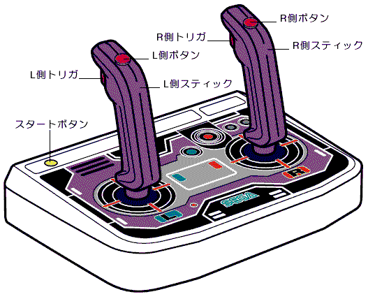

★INDEX
▲
|STN-47
|STN-48
|STN-49
|STN-50
|STN-51
|STN-52
■
★INDEX
▲
|STN-47
|STN-48
|STN-49
|STN-50
|STN-51
|STN-52
■
発行番号： | STN-50 | ||||||
|---|---|---|---|---|---|---|---|
発 行 日： | 96/11/07 | ||||||
メディア： | ○共 通 | ○CD-ROM | ○カートリッジ | ○その他 | |||
関 連： | ○プログラム | ○ハード | ○マニュアル | ○ツール | ○ゲーム | ○バグ | ○その他 |
情報区別： | ○新 規 | ○変 更 | ○追 加 | ||||
重 要 度： | ○厳 守 | ○推 奨 | ○参 考 | ○その他 | |||
添付資料： | ○無 | ○有 | |||||
件名補足： | |||||||
| 左スティック | 右スティック | ||
| 対応キー(ツイン) | ボタン名(標準) | 対応キー(ツイン) | ボタン名(標準) |
| トリガ | Ｌボタン | トリガ | Ａボタン |
| ボタン | Ｒボタン | ボタン | Ｃボタン |
| ↑(上) | 上キー | ↑(上) | Ｙボタン |
| ↓(下) | 下キー | ↓(下) | Ｂボタン |
| →(右) | 右キー | →(右) | Ｚボタン |
| ←(左) | 左キー | ←(左) | Ｘボタン |
例：セガサターン標準パット＋ツインスティックを使用した場合。
”Ｊ△△△△△△△△△△△△△△△” “△”＝スペース(20H)
| bit７ | bit６ | bit５ | bit４ | bit３ | bit２ | bit１ | bit０ | |
|---|---|---|---|---|---|---|---|---|
| ペリフェラルID | ０ | ０ | ０ | ０ | ０ | ０ | １ | ０ |
| １ｓｔデータ | Right | Left | Down | Up | Start | ATRG | CTRG | BTRG |
| ２ｎｄデータ | RTRG | XTRG | YTRG | ZTRG | LTRG | １ | １ | １ |
| サターンペリフェラルタイプ・・・ | ０Ｈ(デジタルデバイス) |
|---|---|
| データサイズ・・・・・・・・・・ | ２Ｈ(２バイト) |
 |
2nd Dataの bit2〜bit0の３ビットは拡張データなのでアプリケーションでは使用しないでください。 |
| ・右スティックの“↓”(レバーを手前の引く) | ：(標準パッドのＢボタンに対応) |
| ・右スティックのトリガオン | ：(標準パッドのＡボタンに対応) |
| ・右スティックのボタンオン | ：(標準パッドのＣボタンに対応) |
| ＋ | |
| ・スタートボタンを押す | ：(標準パッドのSTARTボタンに対応) |
が発生します。しだがってアプリケーション作成時には、このような入力に対してもハングアップや異常な動作などが起きないように注意してください。

★INDEX
▲
|STN-47
|STN-48
|STN-49
|STN-50
|STN-51
|STN-52
■